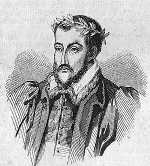
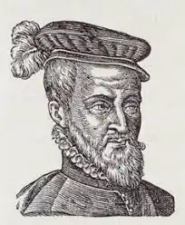

ДЮ БЕЛЛЕ, Жоашен (Du Bellay, Joachim — 1522, м. Ліре — 01.01.1560, Париж) — французький поет доби Відродження, один із лідерів "Плеяди", її теоретик.Народився у замку Тюрмельєр, що поблизу містечка Ліре (провінція Анжу), у старовинній дворянській сім'ї. Рано втратив батьків, залишився на опіці брата, який мало турбувався про нього. Дитинство і юність, проведені на самоті, назавжди прив'язали Дю Белле до рідних місць, що стали згодом однією з улюблених тем його творчості. 1545 р. поїхав в університетське місто Пуатьє вивчати право. Тут він познайомився з французькими гуманістами, зокрема, з Жаком Пелтьє, під впливом якого почав писати поезії. Знайомство з П. де Ронсаром спонукало його залишити Пуатьє і заняття юриспруденцією та переселитися у Париж (1548 p.). Отримав гуманістичну освіту в паризькому колежі Кокере. У 1549 р. три учні колежу — Дю Белле, П. де Ронсар і де Баїф та їхній учитель і директор Ж. Дора утворили літературний гурток "Бригада". У 1553 р. склад гуртка розширився до семи осіб (прийшли Е. Жодель, П. де Тіар і Р. Белло), а його назва змінилася на "Плеяду" (на честь семи олександрійських поетів III ст. до н.е.). Дю Белле став автором її маніфесту — трактату "Оборона і звеличення французької мови" ("Defense et illustration de la langue franchise", 1549).
Трактат поділений на дві частини. У першій Дю Белле пояснює, чому французька мова не настільки багата, як грецька чи латинська, стверджуючи, що вона має необмежені можливості і її варто невпинно розвивати; що одними перекладами класичних творів, при всій їхній корисності, цього не домогтися, тому куди ефективніше наслідувати класиків; що потрібно відмовитися від примарної мети відродити на французькому ґрунті грецьку або латинську словесність. У другій частині йдеться про те, що природний талант поета може бути посилений наполегливим вивченням класичних авторів. Водночас Дю Белле аналізує жанри, які необхідно прищепити у Франції (ода, елегія, еклога, епічна поема, комедія, трагедія і сонет); розглядає технічні прийоми. Завершується трактат закликом до французів писати рідною мовою.
В "Обороні" була проголошена необхідність розриву з традицією придворної поезії і поставлена проблема відновлення французької поетичної культури шляхом її наповнення гуманістичним змістом. Дю Белле різко ганив на "поганих віршотворців", котрі ганьблять Францію, і заперечував малі форми, які вони культивували — рондо, балади, віреле, королівські пісні, які він називає "прянощами" ("epiceries"), Дю Белле зневажав поезію, створену лише задля розваги. Він висунув новий критерій художності, запозичений у древніх: "Знай, читачу, лише той буде справжнім поетом, хто змусить мене обурюватися, заспокоюватися, радіти, страждати, кохати, ненавидіти, захоплюватися, жахатися, — одним словом, хто буде зі своєї волі керувати і розпоряджатися моїми почуттями". Нові жанри, що відповідали б новому змісту поезії, Дю Белле пропонував запозичати в античного мистецтва. Але він значно розширив список цих жанрів, включивши сюди оду, сатиру, послання, елегію, еклогу, епопею, трагедію і комедію. Дю Белле полемізував також і з латинською поезією, не менш небезпечним ворогом, аніж придворна поезія. Він переконаний у тому, що шляхом "обробки" можна і "французьким діалектом" створити національну поезію, здатну дорівнятися до античної і навіть перевершити її. Дю Белле пропонує ряд способів збагачення французької літературної мови. З одного боку, він хотів розширити її лексичний матеріал шляхом: 1) створення неологізмів; 2) запозичення "професійної" та просторічної лексики; 3) використання незаслужено забутих давньофранцузьких слів; 4) обережного запозичення з давніх мов. З іншого боку, він ставив проблему створення справді поетичного стилю, відмінного від стилю прози. Цей стиль, на його думку, повинен характеризувати перифрази, індивідуалізовані епітети, піднесеність тону і "вченість". Центральною у трактаті є також проблема поета. Поет, на думку Дю Белле, — не просто "приватна особа", котра розповідає про свої переживання, а пророк, його піснеспіви — провісні мрії про долі держав, народів і тронів. Поезія не повинна бути простою служницею істини, вона — втілення мудрості та краси, вона — дарунок, що вивищує поета над іншими смертними. Проте поет для Дю Белле — не тільки пророк, а й трудівник, котрий володіє "мистецтвом поезії", і тому здатний створити досконалий твір. Після "Оборони і звеличення французької мови " з'явилися поетичні твори Дю Белле. Його улюблена віршова форма — сонет. Дю Белле значно розширив його тематичний діапазон. Найприкметнішою ознакою його сонетної творчості є камерність. Дю Белле увійшов в історію французької ренесансної лірики як співець "приватної" людини й усього, що її безпосередньо стосується. У 1550 р. він видав збірку "Олива" ("Olive" — анаграма жіночого імені Viole, якій адресувалися любовні вірші Дю Белле). До збірки увійшло кілька од і 50 сонетів, написаних під впливом Ф. Петрарки, Л. Аріосто й інших італійських поетів. У наступному році книга була перевидана в значно розширеному вигляді. Якщо "Олива" мала здебільшого наслідувальний характер, то особисті страждання Дю Белле привнесли в його поезію початку 50-х pp. XVI ст. більш оригінальні інтонації та почуття. У поемі "Скарга зневіреного" (1551) йдеться про безрадісну юність поета, його хвороби та поневіряння. Новим поштовхом його творчості стала поїздка в Рим (квітень 1553 — квітень 1557), куди він відправився як секретар свого родича, кардинала Жана Дю Белле, французького посла у Римі. Перебування в Італії, яка все більше перетворювалася з батьківщини Відродження у вогнище контрреформації, глибоко розчарувало поета. Про це він, перефразовуючи відомі рядки Ф. Петрарки, написав в одному зі своїх сонетів:Нещасний рік і день, нещасна хвиля й мить,Коли, обдурений надією пустою,Розстався легко я з вітчизною святою І з дорогим Анжу, щоб тут за ним тужить.("Сонет", тут і далі пер. В. Мисика)Наслідком цих розчарувань стали дві збірки сонетів — "Співчуття" ("Les Regrets", 1558) і "Римські старожитності" ("Les antiquites de Rome", 1558), видані Дю Б. після повернення у Францію. Якщо у " Співчуттях" відобразилися римські враження Дю Белле від папського двору і ностальгія за Францією, то у "Римських старожитностях" поет сумує на руїнах "вічного міста". Обидві книги, створені за зразком Овідієвих "Скорботних елегій", пронизані скорботою за великою античною культурою, від якої у Римі залишилися лише руїни. Дю Белле виступає і як сатирик: "вічне місто" він зображує як притулок розбещених князів церкви, святенників і дармоїдів. Поет тужить за Францією, яка означена у його сонетах і як "велика батьківщина" ("grand pays"), тобто могутня держава, і як "мала батьківщина" ("petit pays") — рідні місця, Анжу і "маленький Ліре", де він народився і виріс. Вихід друком "Співчуттів" і "Римських старожитностей" приніс поету заслужену популярність, але став причиною його розриву з "високим заступником", кардиналом Дю Белле, через різкі, "нешанобливі" випади проти католицької церкви і римського життя взагалі. Тим самим роком датуються і його латинські "Поеми" (1558), що засвідчили відступ Дю Белле від власних літературно-мовних принципів, а також збірка невеликих ліричних віршів, об'єднаних тематикою "сільського життя" — "Сільські розваги" ("Jeux rustiques", 1558). У збірку ввійшло знамените "Звернення віяльника до вітрів": Це вам, о легковії,Що, крилечка живіїРозкинувши, мчитеПоверх сільських садочків,Гойдаючи листочківМереживо густе, —Підношу я в подякуПучок фіалок, маку,Лілей, троянд, гвоздик — Всього, що тільки можеУ літечко погожеЗростити садівник.Летіть над лісом, ланом,Понад моїм гарманом,Де курява встає,Де я від спеки мліюІ, хекаючи, віюСвій хліб, добро своє. Відмовившись від принципів "Оборони", Дю Белле опублікував також у 1552 р. переклад четвертої книги "Енеїди" (переклад шостої виданий посмертно в 1560).До числа менш значних творів Дю Белле належать "Музагнеомахія" ("Musagnoeomacbie", 1558), у якій змальована боротьба Муз з Неуцтвом у час царювання Франциска І; сатира "Придворний поет" ("Pote courtisan", 1559), де дотепно висміяний віршомаз, заклопотаний лише кар'єрою при дворі; а також серія "Міркувань..." ("Discours...", 1556—1559), що здебільшого мали політичну спрямованість і підготували появу знаменитих "Міркувань" П. де Ронсара. Помер Дю Белле 1 січня 1560 року в Парижі від апоплексичного удару у віці 37 років. Похований він у каплиці Собору Паризької Богоматері.Дю Белле мало що реалізував із тієї програми, яку він проголосив у "Обороні...". Це зробив його друг і сучасник П. де Ронсар. Окремі твори Дю Белле українською мовою переклали М. Зеров, М. Терещенко, В. Мисик, Д. Павличко. Є. Васильєв